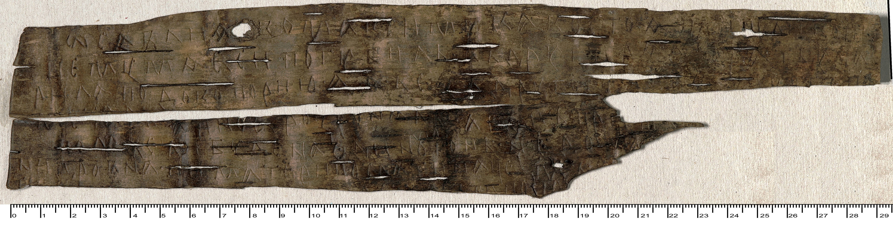
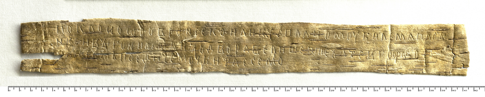
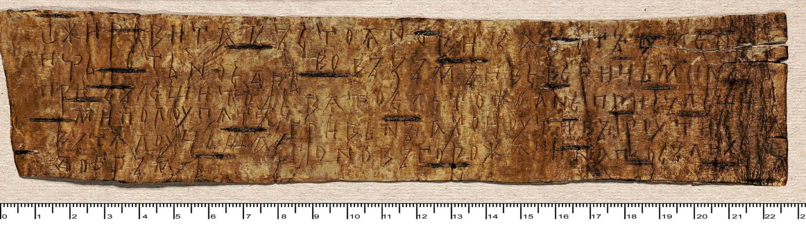
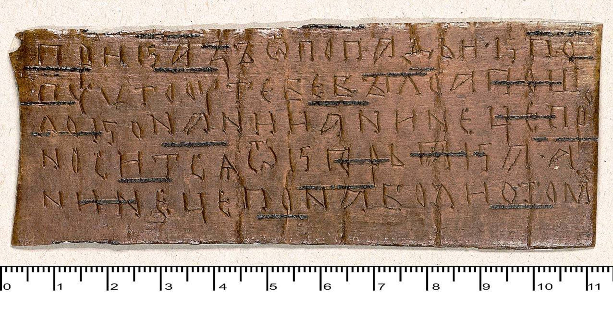

Примеры интересных берестяных грамот:
| Номер грамоты | Текст | Фотография |
| 272 | От Савлия к Максиму. Немедленно пришли коня. Зачем ты меня погубил? Второй раз рать ударила под Копорьем, и я без второго коня имущество побросал, а иное растерял. Так что пришли … Если будет тревога, на одном коне нет дома [возможности что-то сделать] … ни дров, и матери послать не на чем … |  |
| 415 | Поклон от Фовронии Филиксу с плачем. Избил меня пасынок и выгнал со двора. Велишь ли мне ехать в город? Или сам приезжай сюда. Я избита |  |
| 246 | От Жировита к Стояну. С тех пор, как ты поклялся мне на кресте (или: взял крест) и не присылаешь мне денег, идет девятый год. Если же не пришлешь мне четырех с половиной гривен, то я собираюсь за твою вину конфисковать товар у знатнейшего новгородца. Пошли же добром |  |
| 538 | Наказ от попадьи попу. То, что у тебя произошло, дошло до Онании, и теперь это разносит Кюрьяк. Так что позаботься об этом |  |